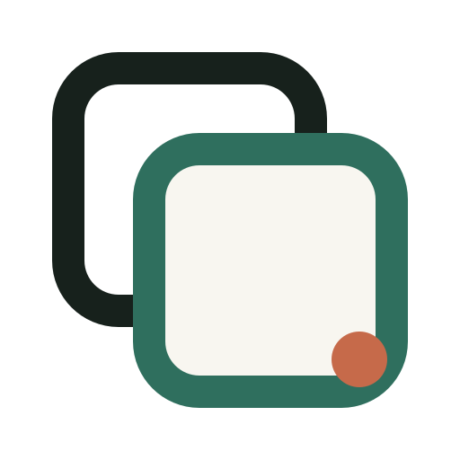
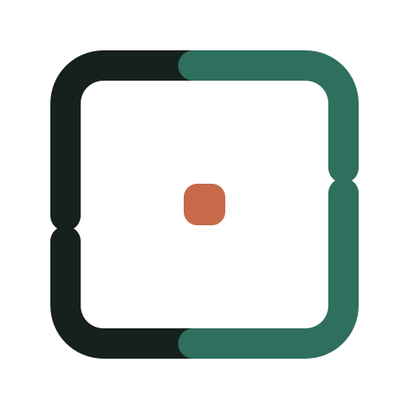
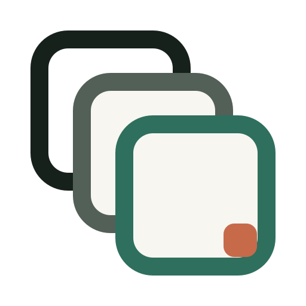
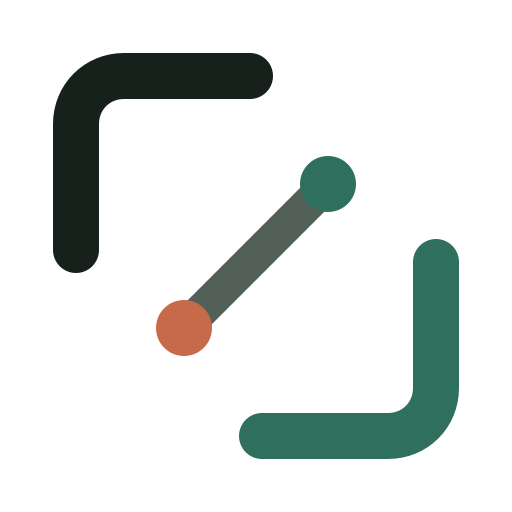
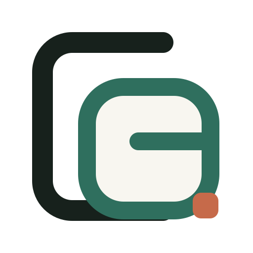

Одна идея — разные степени строгости, движения и брендовой самостоятельности.

Полировка исходника: спокойнее, мягче и увереннее.

Открытые рамки, меньше массы и больше ощущения движения.

Самая буквальная идея регулярной творческой тренировки.

Динамичный жест: от первой точки к следующему решению.

Рамки начинают складываться в собственный знак CG.